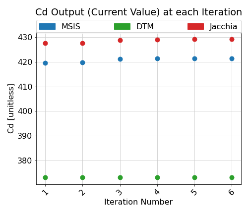
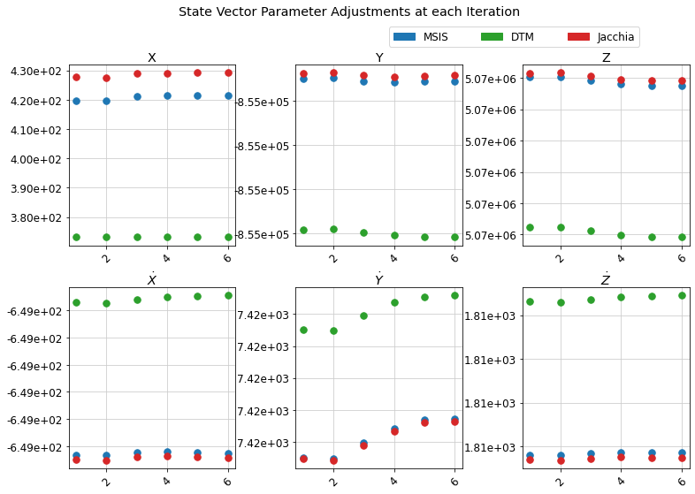

Atmospheric Density Models¶
GEODYN can select the atmospheric neutral density model that is used in the drag calculation.
ISS tracked with GPS run:¶
As of December 2020, the only density models in GEODYN are MSIS 86, Jacchia 71, and DTM 87.
Below are plots of the drag coefficient (Cd), state vector, and density for the ISS run for different atmospheric density models.
It is worth noting that for ISS runs, the mass and area are not well known, and are contributing to large errors in the drag coefficient. in addition to this, poor density models are further compensated for by inflating the drag coefficient in order to keeep residuals between OD iterations low.
Plot of Drag Coefficient (Cd):

Plot of State Vector:

Plot of modelled density along the satellite orbit: